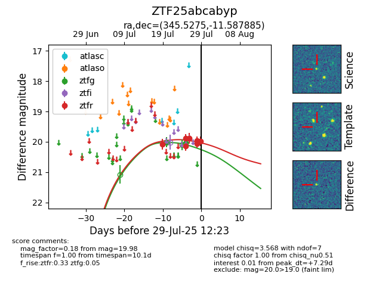

Target ZTF25abcabyp at 2025-08-05 23:02, see:
FINK: fink-portal.org/ZTF25abcabyp
Lasair: lasair-ztf.lsst.ac.uk/objects/ZTF25abcabyp
ALeRCE: alerce.online/object/ZTF25abcabyp
alt names
ZTF25abcabyp (ztf,fink)
coordinates:
equatorial (ra, dec) = (345.5275,-11.58789)
galactic (l, b) = (58.7952,-60.00966)
photometry
last ztfg=20.31, ztfr=19.85
9 ztfg, 12 ztfr detections
